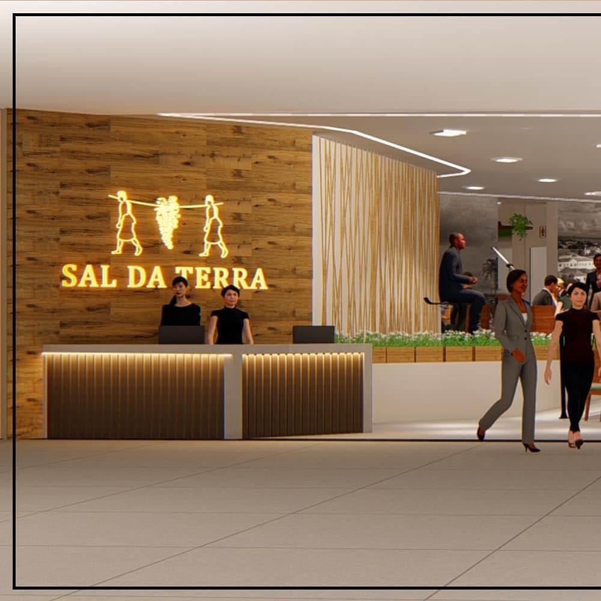

Sal da Terra
Descrição do Projeto
Loja: Churrascaria Sal da Terra
Proprietário: Luciano
Churrascaria localizada no @aracatubashopping na cidade de Araçatuba, interior de São Paulo.
O projeto foi pensado a partir do conceito de memória, onde um dos pedidos do cliente foi retratar a cidade de Araçatuba no passado, dessa forma, adesivos com fotos antigas destacam-se em todo o interior da churrascaria.
O estilo rústico trás por sua vez, a conexão do espaço com a Cidade do Boi Gordo, título ganho pelo município e reconhecido até os dias atuais. Além disso, pensamos em um layout capaz de atender desde famílias até grupos de amigos para um happy hour pós trabalho.

←Voltar aos Trabalhos